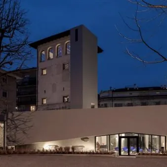

da mar 13 ott a gio 30 set
Oltre la dimensione dell'esistente. Friuli 1976. La ricostruzione che partì dalle fabbriche
Nell’ambito delle celebrazioni programmate dalla Regione FVG per il 50° anniversario del terremoto in Friuli, Confindustria Udine, Associazione Archimede e Domenico Taverna e Vetrina dell’Ingegno inaugureranno, martedì 13 ottobre, alle 17, nella Torre di Santa Maria, la mostra…
 Indicazioni
Indicazioni
- Costi e prenotazioni
- Costo non indicato · Prenotazione non indicata
- Programma
- Programma da verificare. Apri la fonte ufficiale per orari e possibili aggiornamenti.
- In caso di maltempo
- Nessuna indicazione specifica pubblicata.
- Note
- Acquisito automaticamente dalla fonte.
L’EVENTO
Descrizione completa
Nell’ambito delle celebrazioni programmate dalla Regione FVG per il 50° anniversario del terremoto in Friuli , Confindustria Udine, Associazione Archimede e Domenico Taverna e Vetrina dell’Ingegno inaugureranno, martedì 13 ottobre , alle 17 , nella Torre di Santa Maria , la mostra “Oltre la dimensione dell’esistente. Friuli 1976. La ricostruzione che partì dalle fabbriche” . La mostra illustra la ripartenza e la ricostruzione industriale post terremoto , in un racconto a più voci, lungo un percorso “immersivo vintage ”. Erano passati pochi giorni dalla scossa del 6 maggio, quando il presidente di Confindustria, Gianni Agnelli , si recava presso gli stabilimenti Snaidero, a Majano , per incontrare gli industriali. Con essi, incontrava idealmente anche i lavoratori, le famiglie, le comunità che proprio attorno alle fabbriche si riunivano per dare continuità e speranza alla propria vita. In quella e in altre occasioni il motto “prima le fabbriche” divenne visione condivisa da tutti gli attori della ricostruzione. Un monito a far ripartire prontamente le attività produttive, a garantire il lavoro, e allontanare lo spettro di una nuova fase di emigrazione. A distanza di un anno da quel momento, la ricostruzione delle “fabbriche” era pressoché conclusa. Ma non erano più le fabbriche di prima. Condizioni di contesto, talenti e volontà avevano impresso un’accelerazione nei cambiamenti costitutivi di quelle realtà produttive. E, soprattutto, come sottolineò il presidente di Confindustria Udine Andrea Pittini , era avvenuta una ricostruzione “oltre la dimensione dell’esistente ”. La mostra sarà visitabile , a ingresso libero, ogni sabato dalle 15 alle 19, fino a settembre 2027 nella Torre di Santa Maria.
IL PROGRAMMA
Programma e orari
Appuntamenti raccolti dalle fonti elencate. Dove manca un orario, non è ancora disponibile in questa scheda.
Programma pubblicato
- Dal 2026-10-13 al 2027-09-30
INFORMAZIONI UTILI
Prima di partire
- Controllare la fonte prima di partire.
ORGANIZZAZIONE